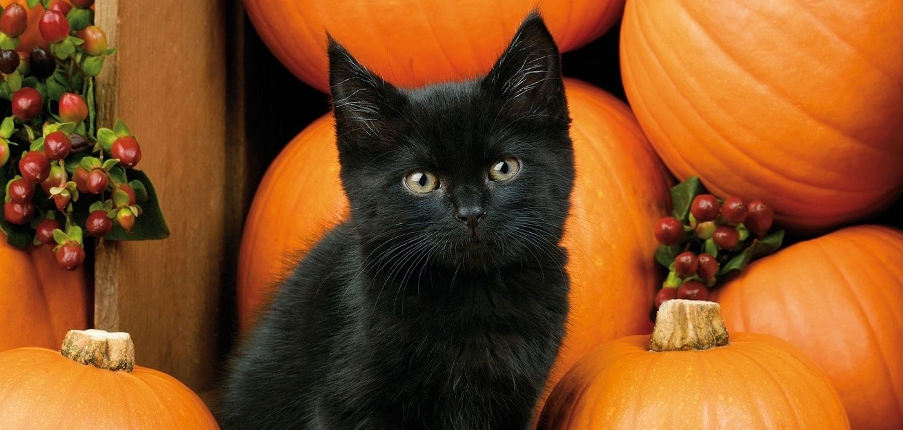
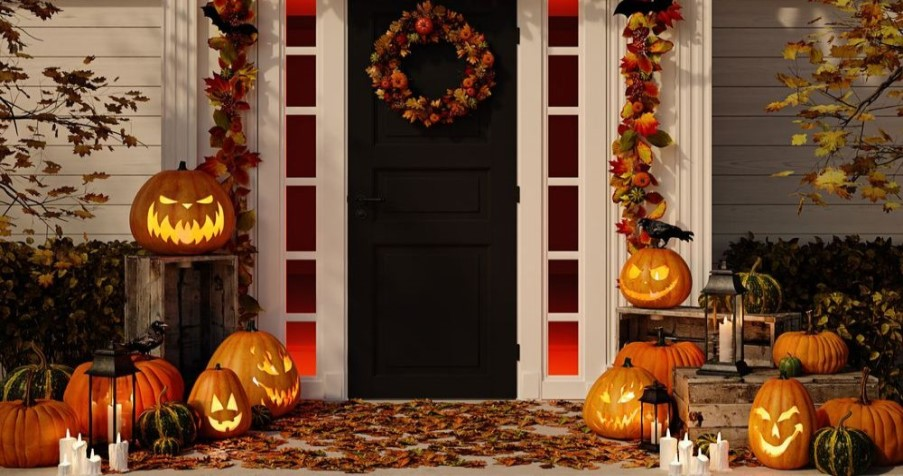

Что это за праздник – Хэллоуин?
.jpg)
На самом деле, как его только не называют...Праздник смерти, Самайн, Канун Дня всех святых. Больше всего прижились названия Самайн и Хэллоуин. Кстати, если вас давно мучает вопрос о том, куда ставить ударение в последнем, то куда угодно. Правильно и ХЭллоуин, и ХэллоуИн. В этот день принято считать смерть и страх смешными, наряжаться в костюмы всевозможной нечисти и веселиться. Само собой, традиции празднования Хэллоуина сейчас и несколько веков назад очень различаются, но любить праздник со временем меньше не стали.
Почему тыква — символ Хэллоуина?
.jpg)
Тыква — это основной символ Хэллоуина. Она одновременно символизирует окончание сбора урожая, злого духа и огонь, который отпугивает нечисть. Современные праздничные тыквы, несмотря на устрашающее выражение лица, все же очень забавные и милые. Декор на Хэллоуин не ограничивается лишь фонарем из тыквы.
Коты и Хэллоуин
Многие не понимают, как вообще связаны коты и Хэллоуин. Рассказываем: в средние века все считали, что коты – помощники темных сил. Люди были уверены, что ведьмы отправляют котов на разведку к людям или сами превращаются в хвостатых. Так что через некоторое время, когда страх у людей достиг своего апогея, котов и ведьм начали массово истреблять. Котов даже судили! Одевали в человеческую одежду и выносили приговор.
Украшение дома к Хэллоуину
Стоит сказать, что если вы не собираетесь отмечать Хэллоуин дома, и внутри помещения вам не особо хочется видеть мумии, паутину и все такое, то достаточно будет просто украсить дом снаружи, чтобы создавать настроение как себе, так и окружающим. Однако, если вы хотите отметить ночь ужаса у себя и впечатлить всех гостей, тогда придется постараться! А мы с этим поможем.
Костюмы к Хэллоуину
Главный вопрос всех, кто собрался отмечать Хэллоуин: кем нарядиться?
Предлагаем свои варианты:
Вампир
Можете импровизировать! Создать такой образ легко, а выглядит очень эффектно.
Любой персонаж фильмов Тима Бертона
Бертон – гений ужасов, которые не вызывают желания разбить монитор. А персонажи у него все колоритные и лаконичные. Так что выбирать есть из чего: Труп невесты, Суинни Тодд, Сонная лощина, Эдвард Руки-ножницы, Кошмар перед Рождеством, Битлджус и другие картины Бертона могут стать прекрасным источником вдохновения.
Мумия
Обмотался бинтами и вперед!